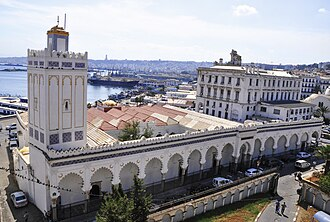

Общие сведения
Le Djamâa El Kebir — littéralement : la Grande Mosquée — est une des principales mosquées d'Alger d'époque médiévale. Sa construction remonte au Xe siècle au temps de la fondation d'Alger par Bologhine Ibn Ziri. Le minaret date de 1324 et fut construit par le sultan zianide de Tlemcen, Abû Tâshfîn. C'est donc l'une des plus anciennes mosquées de la ville.
الجامع الكبير لمدينة الجزائر أو الجامع الأعظم كما كان يسمى في الفترة المرابطية، هو من أقدم المساجد القائمة في مدينة الجزائر، ويعد إلى جانب الجامع الكبير في تلمسان والجامع الكبير في ندرومة واحدا من الآثار القليلة المتبقية من العمارة المرابطية. يرجع تاريخ بناء الجامع الكبير إلى القرن الخامس هجري خلال امتداد حكم سلالة المرابطين للمغرب الأوسط على يد مؤسس الدولة أمير المسلمين يوسف بن تاشفين وبالضبط في الأول من رجب عام 490 للهجرة الموافق ل 18 جوان سنة 1097م ويعتقد أنه قد شيد على أنقاض كاتدرائية مسيحية تعود إلى العهد الروماني. فيما يعود تاريخ بناء مئذنته التي لم تبق على شكلها الأصلي إلى سنة 1324م على يد السلطان الزياني أبو تاشفين الأول على غرار مئذنة الجامع الكبير في تلمسان.
The Djamaa el Kebir or Great Mosque of Algiers, is a mosque located in the city of Algiers, Algeria. Built in 1097, it is one of the few remaining examples of Almoravid architecture. Although it has undergone other additions and reconstructions since its foundation, it is the oldest mosque in Algiers and is said to be one of the oldest mosques in Algeria after Sidi Okba Mosque and Sidi Ghanem Mosque. The mosque is located in the Casbah of Algiers, a UNESCO World Heritage Site.
El-Kebir Camii, Cezayir'in başkenti Cezayir'de bulunan bir camidir. Cami, 1097 yılında Murâbıtlar döneminde inşa edilmiş olup Cezayir Kasbahı'nda yer almaktadır.
Djamaa el Kebir, adalah masjid di Aljir, Aljazair. Didirikan pada 1097, bangunan ini merupakan salah satu contoh arsitektur Almoravid yang masih bertahan serta termasuk masjid tertua di kota tersebut. Masjid ini terletak di kawasan Kasbah Aljir yang berstatus Situs Warisan Dunia UNESCO.
جامع الکبیر الجزائر الجزائر شہر، الجزائر ، کی ایک مسجد ہے۔ منبر پر ایک تحریر اس بات کی گواہی دیتی ہے کہ یہ مسجد 1097 میں تعمیر ہوئی تھی۔ اسے کئی دیگر ناموں سے بھی جانا جاتا ہے جیسے گرینڈ مسجد ڈی ایلجر ، جامع الکبیر ، الکبیر مسجد اور جامع مسجد۔ یہ مرابطی فن تعمیر کی چند باقی مثالوں میں سے ایک ہے۔ یہ الجزائر کی قدیم ترین مسجد ہے اور کہا جاتا ہے کہ سیدی عقبہ مسجد کے بعد الجزائر کی قدیم ترین مسجد ہے۔ اس مسجد کو سلطان علی ابن یوسف نے تعمیر کرایا تھا۔ اس کا مینار 1332 میں بنایا گیا تھا اور سلطان تلسمان نے تعمیر کرایا تھا۔ مسجد کے باہر کی گیلری 1840 میں تعمیر کی گئی تھی۔ اس کی تعمیر فرانس کی طرف سے تعمیر نو کے طور پر کی گئی۔
La Gran Mezquita de Argel es una mezquita en Argel, Argelia, situada muy cerca del puerto de dicha ciudad.
La Grande moschea di Algeri è una moschea di Algeri, in Algeria. Situata nella casba e realizzata dagli Almoravidi nell'XI secolo, all'edificio della moschea vennero applicate alcune aggiunte e ristrutturazioni nel corso del XIV e del XIX secolo.
A Grande Mesquita de Argel ou "Djama'a al-Kebir" é uma mesquita em Argel, na Argélia, localizada muito perto do Porto de Argel. Uma inscrição no mimbar (منبر) ou no púlpito testemunha o facto de que a mesquita foi construída em 1097. Também é conhecida por vários outros nomes como a Grande Mesquita de Alger, Djamaa al-Kebir, Mesquita de El Kebir e Jami Masjid. É um dos poucos exemplos remanescentes de Arquitectura almorávida. É a mesquita mais antiga de Argel e é considerada a mesquita mais antiga da Argélia, depois da Grande Mesquita de Cairuão. Foi construído sob o sultão Ali ibne Iúçufe. O seu minarete data de 1332 e foi construído pelo Sultão Zianide de Tremecém. A galeria no exterior da mesquita foi construída em 1840. Sua construção foi uma consequência de uma completa reconstrução da rua pelos franceses.
De Grote Moskee van Algiers is een moskee in Algiers, de hoofdstad van Algerije. De moskee werd gebouwd in 1097 tijdens de heerschappij van de Berberse Almoraviden en bevindt zich in de Kasba van Algiers.
На карте
Документы и ссылки
- Wikipédia — Français
- Wikipédia — العربية
- Wikipédia — English
- Wikipédia — Türkçe
- Wikipédia — Bahasa Indonesia
- Wikipédia — اردو
- Wikipédia — Español
- Wikipédia — Italiano
- Wikipédia — Português
- Wikipédia — Nederlands
- Wikipédia — 中文
- Wikipédia — Русский
- Wikidata — Q2386475
Данные: Викиданные (CC0), обновляются каждые 3 месяца. Год — самая ранняя известная дата постройки здания: для здания, ставшего мечетью позже (как Айя-София), это год постройки исходного здания. Фото: Викисклад, автор и лицензия — на странице каждой фотографии.